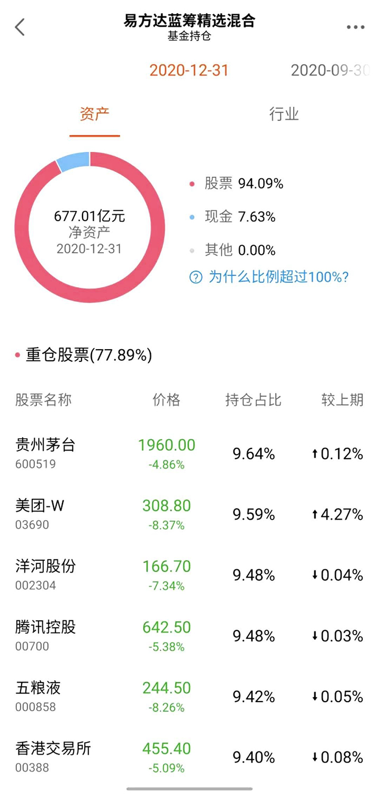
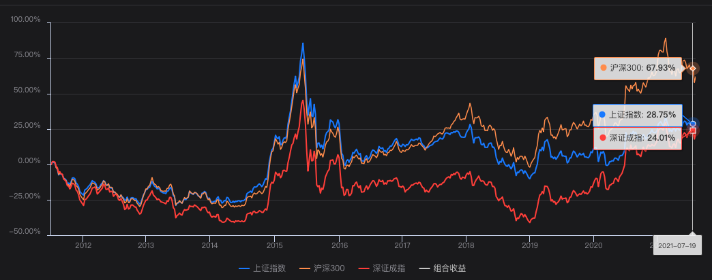
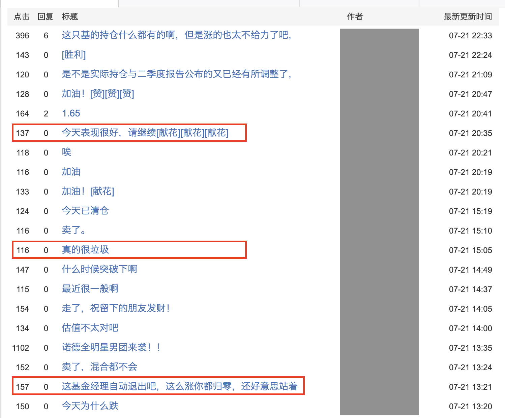

- 00 开篇词 为什么说程序员最适合学财富管理？.md
- 01 财富框架：建立属于你自己的财富双塔.md
- 02 个人发展：你自己的发展才是最大的财富源泉.md
- 03 理财金字塔：如何建立稳固的投资理财结构？.md
- 04 实战知识：有哪些收益稳健的经典资产配置组合？.md
- 05 支点投资法：主动投资是讲逻辑的！.md
- 06 不当韭菜：在财富管理的过程中摆正心态，知己知彼.md
- 07 职业方向：如何选择一个有前景的职业方向？.md
- 08 职业规划：大公司VS小公司，怎样选择更有前途？.md
- 09 期权股权：如何正确处理公司的期权、股权？.md
- 10 跳槽涨薪：如何规划一条合理的职业道路？.md
- 11 财富拓展：35岁失业？程序员如何拓宽财富渠道？.md
- 12 房产投资：如何做出理性的买房决策？.md
- 13 实战知识：让我们编程计算下怎么还房贷最合适.md
- 14 基金投资：如何让专业人士帮你赚钱？.md
- 15 实战知识：如何选出一只优质的基金？.md
- 16 股票投资：最适合散户的股票投资方法是什么？.md
- 17 投资闭环：如何成为越来越专业的投资者？.md
- 18 技术优势：程序员如何用技术超越其他投资者？.md
- 19 量化投资：典型的量化投资系统都包含哪些模块？.md
- 20 价值投资：永远不过时的中长期投资策略.md
- 21 趋势跟踪：怎样跟着趋势一起赚钱？.md
- 22 轮动策略：如何踩准市场变换的节奏？.md
- 23 对冲思想：这个世界上有稳赚不赔的生意吗？.md
- 24 多因子模型：整合不同策略，形成合力的顶层框架.md
- 25 机器学习：我们能用机器学习来建立投资模型吗？.md
- 26 量化实战：从0到1搭建起一套简单的量化投资系统（上）.md
- 27 量化实战：从0到1搭建起一套简单的量化投资系统（下）.md
- 番外一 王喆对话李腾：程序员对基金经理的灵魂十问（上）.md
- 番外三 有哪些能够持续学习的参考资料和相关网站？.md
- 番外二 王喆对话李腾：程序员对基金经理的灵魂十问（下）.md
- 番外四 知识总结：这门课的全部思维导图.md
- 答疑课堂（一） 财富框架篇、个人发展篇思考题集锦.md
- 答疑课堂（二） 投资实战篇、投资进阶篇思考题集锦.md
- 结束语 知行合一：财富管理是一生的事情.md
14 基金投资：如何让专业人士帮你赚钱？
你好，我是王喆，今天我要跟你聊一聊基金投资。
从2019年到2021年上半年，得益于A股的上涨，特别是各大行业龙头企业的股价增长，股票型基金的收益率非常强势。这让基金投资成为了普通投资者眼中非常热门的一种投资手段。
但是，你真的了解基金吗？基金是只有股票型基金一种吗？基金的运作方式是怎样的？我们普通投资者应该如何借助基金，实现我们的财富增长呢？
今天，就让我带你走近基金，讲一讲基金投资的正确打开方式。
基金到底是什么？
很多同学看到“基金到底是什么”这个标题，估计会说：王老师，你也太看不起我了。我就算再小白，也不至于不知道基金是什么吧。基金不就是跟股票啊，债券啊，黄金啊一样嘛：都是投资标的，有一个净值，然后通过投资后净值上涨赚钱。
严格地说，这样的理解还真不算准确。基金跟股票、债券这些投资标的，其实是有本质区别的，它不能归入我在 03讲 介绍的四大投资标的中的任何一个。因为本质上来说，基金并不是一种具体的投资标的，而是一种投资工具。
这种独特的属性是由基金的运作方式决定的。具体来讲，基金是由基金公司建立，由指定的基金经理管理，可以投资于股票、债券、黄金、石油、房地产等几乎所有投资标的的一组投资组合。
举个例子来说，图1 是“基金一哥”张坤管理的易方达蓝筹精选混合基金的投资组合。你可以看到，这只基金不仅投资了A股的贵州茅台，还投资了港股的美团；不仅投资了传统的白酒行业，还投资了新兴的互联网行业。所以简单来说，基金就是基金经理根据自己的投资理念管理的一个投资组合。

上面是我们从总体上对基金的定义，其实还可以细化一点，从不同维度对基金进行分类。
比如，根据投资标的的不同，基金主要分为以下四种：
- 投资于股市的股票型基金；
- 投资于债市的债券型基金；
- 股市债市都投的混合型基金；
- 投资于短期货币市场的货币基金。
基金还可以按照投资地点分类，比如分别投资于美国、欧洲、日本的不同QDII（Qualified Domestic Institutional Investor，合格的境内机构投资者）基金。
我们还可以按照投资的特点，来对基金进行分类，比如完全按照指数比例被动配置的指数型基金，和根据基金经理的理念主动配置的主动型基金等等。
总之，有了基金这个投资工具，你只需要开一个账户，就可以实现全品类、全世界、全策略的投资。你可以反过来想想：如果没有基金，要想投资美股还得专门把钱转成美元，在美国开证券账户，这么高的门槛就能“劝退”不少人了。而通过基金投资，只需要找投资美股的QDII基金就可以了。这是多么强大且方便的投资工具！
选基金，就是选基金经理为你打工
既然我们已经清楚了，基金是一种投资工具，那下一步就是要研究清楚怎么用好这个投资工具。在投资股票的时候，我们看好一只股票，直接买入就可以了。但在买入基金的时候，由于基金和股票有着本质上的不同，选基和选股的逻辑也是完全不一样的。这里，我们先好好讲一讲选基的逻辑，在后面的16讲再讲一讲如何选股。
那选择基金的逻辑是什么呢？这里我先打个比方，帮助你理解：选择一只基金，更接近于选择一位基金经理为你打工，帮你管钱。你和基金经理的关系，类似于老板和职业经理人的关系。
我们想雇佣一位基金经理，主要原因是我们没有太多精力去研究一个特定的投资领域。所以，我们要把专业的事情交给专业的人去做，把做调研、做管理的事情外包给基金经理，让他帮我们管理一部分财富。
所以，选基金的过程，像极了董事长或投资人创建公司和选择CEO的过程。你想想，一位投资人想创建一个公司，他会按照怎样的步骤来呢？我想典型的步骤就两步：
1.选择行业和方向。- 2.选择合适的CEO管理我的公司。
这和选择基金的步骤本质上是完全一致的。选择基金，就要先选择你想投资的赛道，再选择一位优秀的基金经理帮你管钱。下面，我们就来详细聊聊这两个步骤。
第一步，基于资产配置组合或支点投资法，选择一个你认可的投资赛道。
首先，我们要做的就是选择赛道。选择的依据主要有两个，一是被动的资产配置组合，二是主动的投资支点。
如果你的依据是被动的资产配置组合，基金的作用就是实现资产配置的工具。
还是拿我们熟悉的永久组合当例子。永久组合这个配置是由股票、债券、黄金和货币基金组成的，在实现永久组合的时候，我们就会面临这个问题：股票是一个资产大类，我们时间和水平都有限，哪有能力管理一个复杂的股票组合呢？在这个时候，基金就派上用场了。你只要雇佣一位基金经理，帮你管股票这部分钱就好了。
这个时候，就像李腾老师在 04讲 中讲到的，沪深300指数基金就非常合适。因为沪深300指数是由300只流动性好、体量较大，最能代表中国沪市和深市的300只成份股组成的。所以可以说它就是中国股市的晴雨表，而且由于它的成份股是由沪深交易所精选的，往往表现还好于大盘的表现（如图2所示，附数据链接）。试想一下，如果没有基金这个方便的工具，你需要自己管理300只股票，那估计平时也不用做什么其他的事情了。

同理，不管是投资黄金、债券，还是货币，你都可以找到对应的基金。这样，你只需要当好董事长就可以了，冲锋陷阵的事情就交给你挑选的基金经理吧。
另一个依据是“支点投资法”，也就是基于投资支点进行主动投资。和被动的资产配置组合相比，很多同学是可以基于自己的分析确定一个赛道的。
比如，小C同学利用自己的专业信息优势，分析了新能源行业的发展潜力，断定最近五年内，新能源车取代传统汽车的趋势会加速进行。于是，小C依托这些分析判断，给自己设立了一个投资支点，准备投资新能源这个赛道。
但这时候问题又来了：小C 只能通过这个投资支点，判断出新能源这个行业是有长期发展前景的，也就是确定投资的大方向。但是，具体到买哪只股票，小C 又没有精力做更深入的研究了。比如，谈到新能源电池，小C就纠结了：到底是宁德时代强，还是比亚迪发展好？谈到新能源汽车的电子元件，小C也搞不清楚振华科技和德赛西威都在干什么。
这些疑惑都说明，小C的投资支点就只能支撑到他关于行业的判断。那这种情况下，购买一只新能源的行业基金，就远比购买一只新能源相关的个股要合适得多。
所以，在进行基金投资的时候，要先明确你的投资判断位于投资理财金字塔的哪个层级，是投资标的大类级别，还是行业级别，还是更细分的赛道级别。然后，选择对应层级上的基金，这样才能精确地对应你的投资逻辑。
那么到现在，作为董事长的你已经选好赛道了，下一步就是挑选一个合适的CEO了。
第二步，选择一名优秀的基金经理。
要选择一名好的CEO，我们首先要关注的当然是他的历史业绩。这跟我们自己去应聘是一样的，只有拥有一个好的履历，做过很多成功的项目，才能证明你是一位优秀的候选人。这个时候，你可能会有疑问：在选择基金的时候，到底是基金的历史表现重要，还是管理这只基金的基金经理的历史业绩重要？
这是个好问题，也是一个至关重要的问题，我在这里可以给出明确的答案：对于任何主动型基金，基金经理的历史业绩远远比基金本身的历史表现重要。为什么会这样呢？
这主要还是由基金公司的运作模式决定的。对所管理的基金，基金经理几乎拥有绝对掌控权，而其他支持性的团队（比如投研团队）只起到辅助作用。基金的盈利与亏损，责任几乎完全由基金经理来承担。所以，如果一只基金更换了基金经理，那么就意味着这只基金的灵魂被更换了，就算它的历史业绩再光鲜，都不具备很强的参考价值。
在“基金经理是一只基金的灵魂”这个前提下，我们就可以得到两条非常有价值的推论了：
- 新的基金尽量不要购买。如果要一定要购买的话，就必须先调研清楚这只新基金的经理的历史业绩，并且要重点查看这位基金经理是不是操盘过同类的基金。
- 更换了基金经理的基金等同于一只新基金。如果一只基金更换了基金经理，那么它所有的历史评级、历史业绩都不具备很强的参考价值，几乎可以看成一只新基金。
在明确了基金经理的重要性之后，问题的关键就在于如何判断不同基金经理表现的优劣了。这是一件非常专业的事情，一些资产管理公司的投研团队会花大量时间研究不同公募、私募团队的业绩表现，涉及的指标包括但远远不限于Alpha、Beta、夏普率、业绩归因、风格分析等等。
专业的事情，当然要交给专业的人去讲解。下一讲，就由管理了十几年基金的李腾老师来上一节实战课，讲一讲如何考虑各类因素，快速挑选出一只优质的基金。
基金经理是为你服务的，不是为你背锅的
上面，我介绍了基金的本质和选基金的要点。接下来，我要纠正一个普通投资者常常陷入的投资误区：在自己购买的基金表现不好的时候，不思考自己的问题，而是甩锅给基金经理，说他们水平低，表现差。我在某基金App上随便找了一只基金，你可以看一看，购买这只基金的投资者都说了什么。

在一天之内，有夸的，有骂的，但以骂的居多，而且跟理性的分析比起来，大部分都是纯情绪宣泄。我把这些宣泄情绪的投资者，全部归为“神经错乱”投资者那一类。那么，他们错乱在哪呢？
我们前面已经讲得非常清楚了：选基金，其实就是由你这个董事长确定投资赛道，并且选定负责具体操作的基金经理。
一只你选定的基金亏钱了，有80%的可能，应该归罪于你的投资验证失败，你选的赛道有问题，只有20%的可能是这个基金经理造成了一些超额亏损。而且，这个基金经理是你选的，他的历史业绩全部都是透明的，你难道不应该事先就判断出他的能力好坏吗？结果你却遇到亏损就骂，遇到盈利就夸，这样被情绪控制的“董事长”，我估计应该很难成功吧。
说白了，基金经理只是为你打工的，你这个董事长把大方向选错了，却把锅甩给基金经理这个职业经理人，我都要替他们说一句“这锅我不背”。
所以，最后我想再次强调一下支点投资法的关键点，那就是精确匹配投资支点与投资行为。投资支点崩塌了，我们就干净利索地退出，汲取经验教训，开启下一轮投资验证过程就好，奇奇怪怪的甩锅行为是懦夫和“神经错乱”的表现。
小结
今天这一讲，我们详细讨论了基金这个重要的投资手段。我把今天的重点总结在了下面，你需要跟着我再回顾一遍：
- 基金并不是一种具体的投资标的，而是一种投资工具。
- 选基金第一步，是基于资产配置组合或者支点投资法，选择一个你认可的投资品类。
- 选基金第二步，是在你选定的投资赛道上，选择一名优秀的基金经理。
- 你投资的基金表现不好，要首先验证自己的投资支点是不是崩塌了，而不是甩锅给基金经理。
今天这一讲，我们更多是从基金的本质和方法论上去讨论基金投资，并没有涉及到具体的选基金操作。不过不用着急，我们下一讲就邀请李腾老师详细地介绍一下，如何用科学的方法选出一只优质的基金。让我们一同期待吧。
最后需要补充一句，这一讲涉及的基金仅用于举例说明，不构成任何购买建议。
思考题
买基金最忌讳的就是频繁交易，你觉得是为什么？你可以从基金的特点和基金的交易费率两个角度，来回答一下这个问题吗？
思考这个问题时，建议你打开基金App，去查一下不同种类基金的交易费率。
欢迎你在留言区与我交流讨论，我们下一讲见。
© 2019 - 2023 Liangliang Lee. Powered by gin and hexo-theme-book.